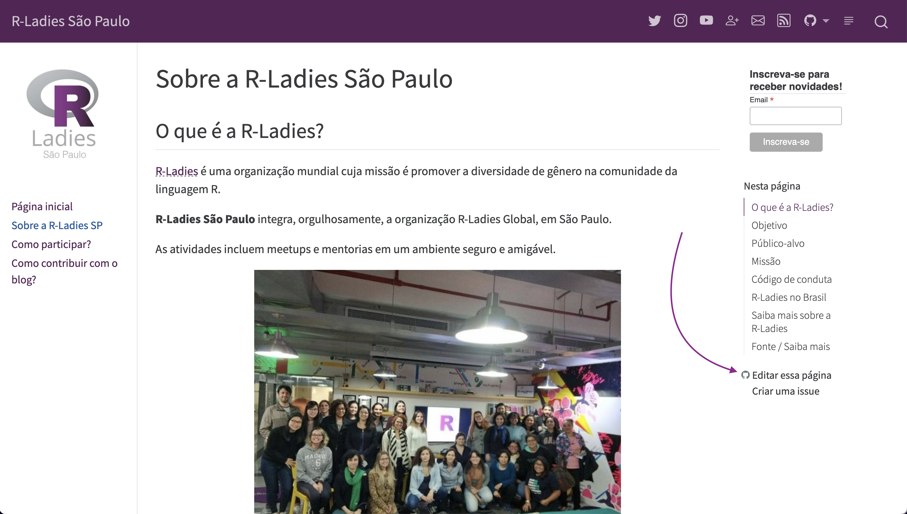

Como contribuir com o blog?
Se você faz parte da comunidade R-Ladies São Paulo ou outros capítulos do Brasil, e gostaria contribuir com algum post ou conteúdo para o blog, a contribuição será muito bem vinda!
Tipos de contribuição
Existem várias formas de contribuir, como:
caso encontre alguma informação desatualizada e/ou que precise de correção, pode fazer a atualização/correção;
escrever algum texto não-técnico relacionado às atividades do grupo;
escrever algum texto técnico para o blog (por exemplo, mostrando alguma análise feita com R por você);
escrever algum tutorial sobre uso de algum pacote para o blog;
enviar algum texto técnico já escrito no seu blog pessoal, que possa ser re-compartilhado aqui;
entre outros!
Como contribuir?
As alterações no código costumam ser feitas através do GitHub. Você pode criar uma conta gratuita e seguir o passo-a-passo indicado abaixo.
Caso você não use GitHub, pode enviar a contribuição escrevendo em um arquivo Google Documentos, word/.docx ou RMarkdown/Quarto, por exemplo, e enviando para a gente através de uma issue no GitHub.
Contribuindo com alguma página que já existe
Caso queira sugerir uma alteração em uma página já existente, siga os passos abaixo:
1 - Primeiro confira se na barra do lado direito aparece o link chamado “Edite essa página”:

Esse link te encaminhará para o arquivo que deve ser alterado no GitHub.
2 - Caso não encontre o link “Editar essa página”, procure o arquivo referente à página que deseja alterar no repositório no GitHub. Os arquivos de texto que devem ser alterados são apenas os que tem extensão .qmd.
3 - Fazendo a alteração no GitHub: EM BREVE!
Contribuindo com um texto/post para o blog
Os arquivos que geram os posts do blog estão na pasta posts/.
1 - Faça uma cópia da pasta template-post/. Nomeie a pasta iniciando com o ano e mês, e algumas palavras que indicam o conteúdo do texto de uma forma “limpa”, sem usar acentos, espaços, e outros caracteres especiais. Ex: 2022-12-tutorial-tidyverse.
Nessa pasta, tem arquivos para gerar um post:
index.qmd: esse é o arquivo principal! Neste arquivo, estão descritos os metadados do arquivo (quem escreveu o post, data, categorias, entre outros), e o texto do post. Tem vários exemplos e comentários neste arquivo para ajudar quem ainda não tem muita familiaridade com Quarto!images/: é uma pasta onde pode guardar as imagens que você queira usar no post.pacotes.bib: é um arquivo opcional e gerado automaticamente, contém as referências dos pacotes utilizados no post.
2 - Edite os conteúdos na pasta copiada!
3 - Envie suas mudanças como um Pull request no GitHub: EM BREVE!.